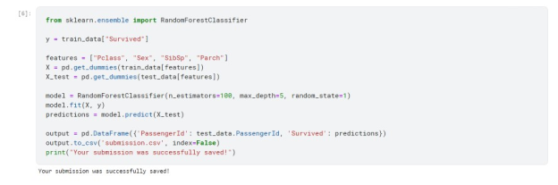

On April 15, 1912, during her maiden voyage, the widely considered “unsinkable” RMS Titanic sank after colliding with an iceberg. Resulting in the death of 1502 out of 2224 passengers and crew. While there was some element of luck involved in surviving, it seems some groups of people were more likely to survive than others.
The challenge is to build a predictive model that answers the question: “what sorts of people were more likely to survive?” using passenger data (ie name, age, gender, socio-economic class, etc).
train.csv and test.csv data sets are provides to us for this competition. Train dataset (train.csv) is used for training the model and test dataset (test.csv) is used for prediction. train.csv contains the details of a subset of the passengers on board (891 passengers, to be exact -- where each passenger gets a different row in the table).Using the patterns found in train.csv, we have to predict whether the other 418 passengers on board (in test.csv) survived.
Submission File Format: The submission file is csv file with 2 columns passengerId and Survived
[1] To load train data
[2] To load test data
[3] Female passengers survived
[4] Male passengers survived
In this to train the model we used random forest classifier, considering patterns in four different columns ("Pclass", "Sex", "SibSp", and "Parch") of the data. It constructs the trees in the random forest model based on patterns in the train.csv file, before generating predictions for the passengers in test.csv. The code also saves these new predictions in a CSV file submission.csv.
